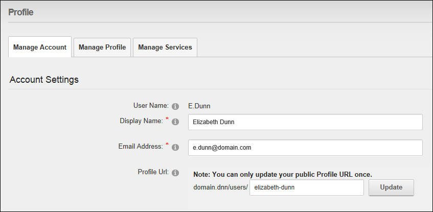
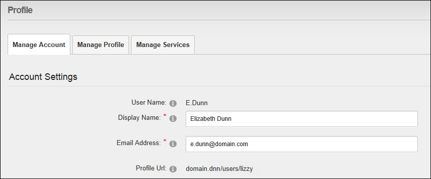

Managing your User Account
How to manage your user credentials including your names and email address. Note: Your user name cannot be changed.
- Login to the site. See "Logging into a Site"
- Click on your [Display Name] link (typically located in the top right corner of the site) - OR - Navigate to a ViewProfile module. This will display the Activity Feed page of your user profile.
- Click the Edit Profile button. This displays the Manage Profile page.
- Select the Manage Account tab.
- Expand the Account Settings section.
- Update any of the below details:
- In the Display Name text box, edit the name you want to be displayed to other site members.
- In the Email Address text box, edit your email address.
- In the Profile URL text box, the default URL for your profile is displayed. You are able to modify and update this URL (sometimes referred to as a vanity URL) one time only. To change the default URL, enter the new URL that you would like to go to your public profile. E.g. Entering "lizzy" will allow others to view your profile using the URL http://www.domain.com/users/lizzy. Note: You can only update your public Profile URL once.

-
